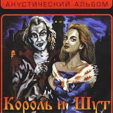

[Куплет 1] Замученный дорогой, я выбился из сил И в доме лесника я ночлега попросил С улыбкой добродушной старик меня впустил И жестом дружелюбным на ужин пригласил (Хэй!)
[Припев] Будь как дома, путник Я ни в чём не откажу Я ни в чём не откажу Я ни в чём не откажу! (Хэй!) Множество историй Коль желаешь, расскажу Коль желаешь, расскажу Коль желаешь, расскажу!
[Куплет 2] На улице темнело, сидел я за столом Лесник сидел напротив, болтал о том, о сём Что нет среди животных у старика врагов Что нравится ему подкармливать волков
[Припев] Будь как дома, путник Я ни в чём не откажу Я ни в чём не откажу Я ни в чём не откажу! (Хэй!) Множество историй Коль желаешь, расскажу Коль желаешь, расскажу Коль желаешь, расскажу! [Куплет 3] И волки среди ночи завыли под окном Старик заулыбался и вдруг покинул дом Но вскоре возвратился с ружьём наперевес «Друзья хотят покушать, пойдём, приятель, в лес!»
[Припев] Будь как дома, путник Я ни в чём не откажу Я ни в чём не откажу Я ни в чём не откажу! (Хэй!) Множество историй Коль желаешь, расскажу Коль желаешь, расскажу Коль желаешь, расскажу!
| Фото | Название | Год выпуска |
|---|---|---|
|  | ||
| Фото | Название | Год выпуска |